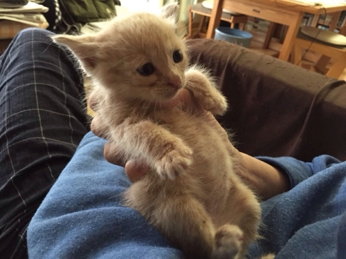
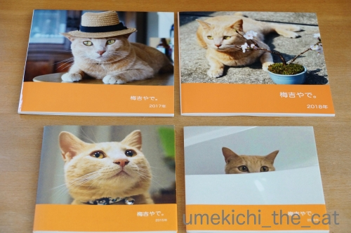
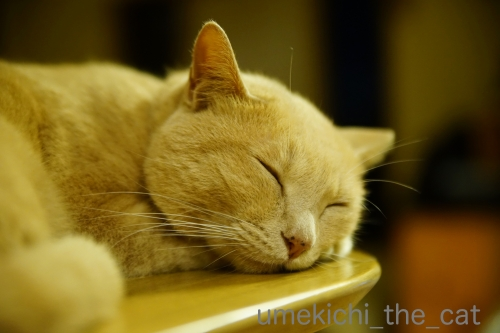
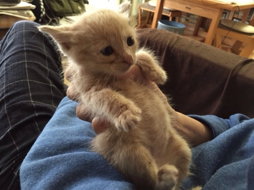
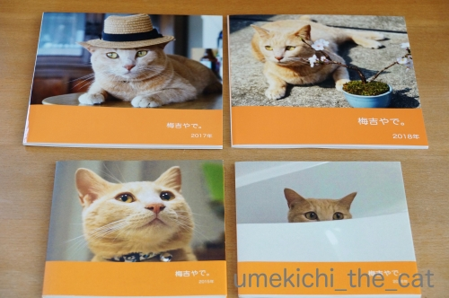
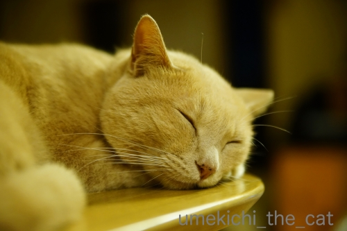

4回目のうちの子記念日＆ブログ3周年 [梅吉]
今日7月26日は梅吉の4回目のうちの子記念日です。
梅吉のはじめてのうちの子記念日にスタートした当ブログも丸３年が経ちました。
これからも当ブログと梅吉をどうぞよろしくお願い致しますm(_ _)m

我が家にやって来た日の写真。なんてあどけない！！
梅吉とはサイドバーにリンクを貼ってあるおおさかねこネットが主催する
保護猫の譲渡会で出会いました。
譲渡会に行く前に食べたラーメンの画像は残っているのに譲渡会の時の写真は一枚もなし(꒦ິ⌑꒦ີ)
当時ブログはしてなかったにしても運命の出会いの写真くらい撮っておけばよかったと後悔しきり。
そうしたらおおさかねこネットのブログでその時の様子がアップされているのを発見しました。

私たちが参加したのは19日。
場所は都島区。「としまく」ではありませんw「みやこじまく」。
当時、大阪にも「としまくがあるんだねっ」て言ったらおっとに笑われたw
ここは我が家から電車と地下鉄を乗り継いで行くところ。
今にして思えばよくわざわざ出向いたな、です。梅吉に呼ばれたのでしょうね＾＾

（おおさかねこネットのブログよりお借りしました）
じゃーん！譲渡会での梅吉（この時はまだ小太郎くん）。
これが記念すべき出会いの日でした。
このケージの中から梅吉が指に「鼻チュー」してきて、まんまと籠絡されましたよ、わたし(〃▽〃)

（おおさかねこネットのブログよりお借りしました）
里親さん宅での写真。
この距離感だと先住猫さんとも問題なく過ごせていた様子。
今、梅吉が他の猫を見ても全然動じないのはこの幼児体験のおかげかな。
先住猫さん＆里親さん優しかったんだろうな・・・ありがとうございます；；
そして更にちっこい梅吉の写真が！！

（おおさかねこネットのブログよりお借りしました）
おなかポンポコリン！お目目もキトンブルーに違いない！！
こんなに小さい梅吉の姿、感激です0(≧▽≦)0
実は小太郎時代の梅吉は病院の簡易検査で猫エイズ陽性判定が出ていたのです。
（おおさかねこネットのこちらとこちらの記事より。もちろん譲渡時に説明がありましたよ＾＾）
後の検査で陰性となりましたけど、陽性だったら譲渡会に出ることなく
この里親さんのおうちの子として暮らしていたのかも。

我が家にやって来て5日目。もうすっかり家族の一員でした。

さて、うちの子記念日前日の25日にフォトブック2018年版が出来上がりました。
表紙、どれがいいと思いますか？なんて皆さんにお聞きしましたが
なんとなんと候補に上がってなかったこの写真が表紙を飾ることにー！！
レイアウト作業中これが一番しっくり来たのです(^_－)☆
フォトブックも4冊目。歴代のフォトブックを並べてみた。

今年の「梅吉やで。」のタイトルのフォントが異様に大きい(ｰ ｰ;)
前年のフォントの大きさを確認せずに「こんな感じ？」と仮にしておいて
最終チェックをせずに発注してしまいました。
「うめきちやでーー！！」と大きな声で叫んでる感じで良いかしらね？ね？
2019年度版は来年のうちの子記念日の頃に作ります。
これからも面白可愛い画像の提供、お願いしますよ！梅吉さん！！

フォトブックを作るのに去年、今年と利用したのはマイブックです。
この時期はフォトブックを作ろうとする人が少ないのか40％オフで作ることができました。
2015、2016年はもうちょいお安いところを利用してたのですが
一度画質の良い方で作るともう後戻りはできないあるあるにハマるw
でも大満足の出来上がりでしたよー＾＾
追記：覚書
おおさかねこネット2015/07/13
おおさかねこネット2015/07/15
おおさかねこネット2015/07/19
おおさかねこネット2015/07/29
 ↑ガブッと一押し↑
↑ガブッと一押し↑
ーーーーーーーーーーーーお詫びとお知らせーーーーーーーーーーーーーーーー
皆様お気づきかと思いますが・・・
ここしばらく頂いたコメントのお返事を書いておりません。
私はどうにも手が遅いせいか頂いたコメントにお返事を書き、かつ
皆様のところにお邪魔してコメントを書いて・・・をしていると
あっという間に時間が過ぎてしまいます。
そこで大変心苦しいのですがコメントのお返事は失礼をする決断をしました。
頂いたコメントはおっと共々楽しく読ませていただいており時には食卓の話題になったりも。
楽しいコメント、本当に感謝をしております。
皆様のところににはこれまで以上に長文で暑苦しいコメントで遊びに伺いますねー！
この度のこと、
今後ブログを無理なく長く続けていくための選択と温かく受け止めていただけると幸いですm(_ _)m
ちぃ
梅吉のはじめてのうちの子記念日にスタートした当ブログも丸３年が経ちました。
これからも当ブログと梅吉をどうぞよろしくお願い致しますm(_ _)m
我が家にやって来た日の写真。なんてあどけない！！
梅吉とはサイドバーにリンクを貼ってあるおおさかねこネットが主催する
保護猫の譲渡会で出会いました。
譲渡会に行く前に食べたラーメンの画像は残っているのに譲渡会の時の写真は一枚もなし(꒦ິ⌑꒦ີ)
当時ブログはしてなかったにしても運命の出会いの写真くらい撮っておけばよかったと後悔しきり。
そうしたらおおさかねこネットのブログでその時の様子がアップされているのを発見しました。
私たちが参加したのは19日。
場所は都島区。「としまく」ではありませんw「みやこじまく」。
当時、大阪にも「としまくがあるんだねっ」て言ったらおっとに笑われたw
ここは我が家から電車と地下鉄を乗り継いで行くところ。
今にして思えばよくわざわざ出向いたな、です。梅吉に呼ばれたのでしょうね＾＾
（おおさかねこネットのブログよりお借りしました）
じゃーん！譲渡会での梅吉（この時はまだ小太郎くん）。
これが記念すべき出会いの日でした。
このケージの中から梅吉が指に「鼻チュー」してきて、まんまと籠絡されましたよ、わたし(〃▽〃)
（おおさかねこネットのブログよりお借りしました）
里親さん宅での写真。
この距離感だと先住猫さんとも問題なく過ごせていた様子。
今、梅吉が他の猫を見ても全然動じないのはこの幼児体験のおかげかな。
先住猫さん＆里親さん優しかったんだろうな・・・ありがとうございます；；
そして更にちっこい梅吉の写真が！！

（おおさかねこネットのブログよりお借りしました）
おなかポンポコリン！お目目もキトンブルーに違いない！！
こんなに小さい梅吉の姿、感激です0(≧▽≦)0
実は小太郎時代の梅吉は病院の簡易検査で猫エイズ陽性判定が出ていたのです。
（おおさかねこネットのこちらとこちらの記事より。もちろん譲渡時に説明がありましたよ＾＾）
後の検査で陰性となりましたけど、陽性だったら譲渡会に出ることなく
この里親さんのおうちの子として暮らしていたのかも。
我が家にやって来て5日目。もうすっかり家族の一員でした。
さて、うちの子記念日前日の25日にフォトブック2018年版が出来上がりました。
表紙、どれがいいと思いますか？なんて皆さんにお聞きしましたが
なんとなんと候補に上がってなかったこの写真が表紙を飾ることにー！！
レイアウト作業中これが一番しっくり来たのです(^_－)☆
フォトブックも4冊目。歴代のフォトブックを並べてみた。

今年の「梅吉やで。」のタイトルのフォントが異様に大きい(ｰ ｰ;)
前年のフォントの大きさを確認せずに「こんな感じ？」と仮にしておいて
最終チェックをせずに発注してしまいました。
「うめきちやでーー！！」と大きな声で叫んでる感じで良いかしらね？ね？
2019年度版は来年のうちの子記念日の頃に作ります。
これからも面白可愛い画像の提供、お願いしますよ！梅吉さん！！

フォトブックを作るのに去年、今年と利用したのはマイブックです。
この時期はフォトブックを作ろうとする人が少ないのか40％オフで作ることができました。
2015、2016年はもうちょいお安いところを利用してたのですが
一度画質の良い方で作るともう後戻りはできないあるあるにハマるw
でも大満足の出来上がりでしたよー＾＾
追記：覚書
おおさかねこネット2015/07/13
おおさかねこネット2015/07/15
おおさかねこネット2015/07/19
おおさかねこネット2015/07/29
ーーーーーーーーーーーーお詫びとお知らせーーーーーーーーーーーーーーーー
皆様お気づきかと思いますが・・・
ここしばらく頂いたコメントのお返事を書いておりません。
私はどうにも手が遅いせいか頂いたコメントにお返事を書き、かつ
皆様のところにお邪魔してコメントを書いて・・・をしていると
あっという間に時間が過ぎてしまいます。
そこで大変心苦しいのですがコメントのお返事は失礼をする決断をしました。
頂いたコメントはおっと共々楽しく読ませていただいており時には食卓の話題になったりも。
楽しいコメント、本当に感謝をしております。
皆様のところににはこれまで以上に長文で暑苦しいコメントで遊びに伺いますねー！
この度のこと、
今後ブログを無理なく長く続けていくための選択と温かく受け止めていただけると幸いですm(_ _)m
ちぃ

カフェオレ色の梅吉

梅吉 2023年8月10日 永眠


梅吉と出会った譲渡会

犬猫の理由なき殺処分ゼロ
妄想広告
UMEKICHI 光

爆発的に早い！
時々攻撃的！
Thanks to Mr.Boss365
爆発的に早い！
時々攻撃的！
Thanks to Mr.Boss365

赤ちゃんの頃の梅吉さんが可愛過ぎでもうたまりません。写真があって良いな~。
縁があって呼ばれたと言うのは確かですね。現在の安心し切って笑顔で寝てる様子を見るとつくづくちぃさん家の子になって良かったねーと思います。
コメ返しは気になさらないで下さい。無理すると続かなくなりますものね。
by zombiekong (2019-07-26 02:29)
庭に来た時の写真が一番小さい時ですかねぇ。
生後1ヶ月前後だと思いますけど面影があります。
生まれた直後から写真が残ってる子は少ないでしょうね＾＾
by ぽちの輔 (2019-07-26 06:50)
梅吉さん、スクスク成長していますね^^
by ニコニコファイト (2019-07-26 07:02)
梅吉さん、うちの子記念日おめでとうございます。
ちっちゃい梅吉さん、超かわゆいーーーー。こりゃメロメロになりますねぇ。
私も出会いを求めてうろうろしてますが、どうもご縁がなくて(;_;)
でも、うちに来る子は来るべくして来ると信じております。
コメント返し、お気遣いなく。普段のこちらへのコメントでも、ちぃさんはとっても丁寧で、お時間かかってるんだろうなぁと案じておりました。
みんな、テキトーですよ。気楽にね。
by ChatBleu (2019-07-26 07:15)
梅吉さん、良い里親さんに恵まれて幸せですね。
家の最初の猫のチビを思い出しました。10年間の生涯でしたが、家内と釣りに行った帰り道に林からいきなり車の前に痩せた猫が飛び出してきました。
お腹が空いていたらしく、お弁当の残りをムシャムシャと食べ、「連れて行ってよ～」と訴えている感じでした。結局我が家の一員になりましたが、その間我が家も幸せでした。
すべて縁なんだな～と思った次第です。
by kou (2019-07-26 07:59)
うちの子記念日♪
おめでとぉ～ございます！
パピー梅吉さん♪
あどけなさもあり可愛すぎですねぇ～(#^.^#)
これからもご家族仲良く
楽しく過ごしてくださいね！！
by きぃ (2019-07-26 08:26)
梅吉さん小さかったですね！
指に鼻チューしてきたのが決め手だったのですね(^^)
by ma2ma2 (2019-07-26 09:26)
譲渡会に行く前に食べたラーメンの画像しかないってのに笑ったけど
実際に譲渡会に出ていたら、写真なんて撮ってる余裕ないよね。
きゃー！！！（はあと）って感じだと思うわ。
梅吉くん、あったかいおうちの子になれて幸せなんでないかい^^
ぽんぽこりんのおなか、これはヤバイ。やられるｗｗ
むちゅ〜〜〜〜って吸っちゃうよｗｗ
梅吉くん、大きくなった今は
どんどん白目出して見せてね^^
ほんっとおめでとうーーーー！！！！
by リュカ (2019-07-26 09:33)
おめでとうございます！！
ちっちゃい時の写真も無事巡り会えたのですね。
ほんと、こういうのって運命的なものがあると思います。
家族の一員となって、フォトブックも出してもらって。
これからも仲良くお過ごし下さいませー(^｡^)
コメント返し、いいんじゃないですか。
私も放置してるときも多いですよ。
長く続けられる方が絶対いいと思います！！！
by よーちゃん (2019-07-26 11:10)
あらま、おなかぽんぽこりん(^^)
そして3頭身(*^^*)
顔の表情は今も当時の面影がありますね。
by も〜 (2019-07-26 11:15)
うちの子記念日4回目を迎えられたことおめでとうございます。
なんとあどけない♪かわいいおなかポッコリのbaby梅吉さん。
食べてしまいたいくらいです(笑
こんな素敵なフォトブック作ってもらえるなんて幸せ者～～
うちの熟女らには内緒でお願いします（^^
コメレス、満を持しての決断だと思います。ウェルカムですよ。
皆様理解してくださるでしょう(^^v
by marimo (2019-07-26 12:02)
梅吉さん、ウチの子記念日おめでとうございます＼(^o^)／
ぽんぽこりんのお腹が可愛らしいこと♪
ほんと、出会うべくして出会ってウチの子になる、つよ～いご縁を感じます。
フォトブック素敵ですね！
いい紙でいい画質で一回作っちゃうと後戻りできない、それ、めちゃくちゃよくわかります(≧▽≦)
あんた、そんなのお小遣い余裕ないんちゃうん？と自分にツッコミ入れながら、猫関係はお財布のひもユルユルでございます^^;
これからも元気で、ステキで面白いお写真楽しみにしています！
寅さん帽かぶったら梅吉さんがやっぱり日本一だと思う(#^^#)
by ゆきち (2019-07-26 12:17)
こんにちは。
４回目のうちの子記念日とブログ３周年！！おめでとうございます。
小生猫も小さな頃のニャンズ写真は少ないですね。後悔しきれない感じです。
小さい小太郎くん（梅吉くん）可愛いですね。
多少不安顔ですが、籠絡？ハートを射抜かれた感じですね。
小生もフォトブックも作ろうと思いながら月日が経過・・・
ちぃさんを見習いたいですね。年内に作る？目標です！！
律儀でやさしいちぃさん、無理しないで下さい。
「コメ返し」を小生もサボっています（笑）
書きたいけど、時間いくらあっても足りません。
「書ける時に書く」で良いかと思います。
アップも「ちぃさんペース」にしようかと計画中（笑）！？(=^･ｪ･^=)
by Boss365 (2019-07-26 12:57)
梅吉さん、4回目のうちの子記念おめでとうございます。小梅吉さん、可愛いですね〜
お腹ポンポコリンのちっこいちっこい梅吉さん、
知らない人のお膝で知らない時代の梅吉さん、
鳴き声までが気になります（笑）
今年も立派なフォトブックができましたね。
愛情がたっぷり詰まって幸せですね。
私の場合はブログ自体が、
そろそろ限界かと思っているところです。
ちぃさんは好きなように、ゆっくりされて下さい。
by kiki (2019-07-26 14:52)
ブログ３周年おめでとうございます
4回目の記念日もおめでとうございます
フォトブックやってみたいんですよねぇ
ずいぶん前に お友達が作ってくれたんですが
自分では作った事がないんですよねぇ
by (。・_・。)２ｋ (2019-07-26 18:21)
3周年おめでとうございます
梅吉さんの成長も伺えますね(^^)v
by チャー (2019-07-26 19:17)
あどけない表情たまりませんね。そりゃ鼻チューされたら籠絡されちゃうわ(*^-^*)
by palpal (2019-07-26 20:19)
困ったちゃんなお顔の梅吉さんが、超キュートでズキュンですね♡
ぷーにゃんがいなくなってから、譲渡会も考えたんですが、条件が難しい
みたいだったので、あきらめました。ご縁のものですね。
コメ返し、楽しいですが、義務化してくると、つらくなってきますよね。
私なんて、ブログもコメ返しも、ものすごく遅いので、押し逃げ、または
時々ドロンしています。物足りなくても時間は無限じゃないですものね。
ちぃさんも、無理のないようにマイペースで。
by nachic (2019-07-26 20:34)
ブログ3周年おめでとうございます。
梅吉さんの小っちゃい頃の写真、我が家に来たチビに少し似ています。
コメントの件、よくわかります。
私も何度か悩みました。仕事から帰ってからのコメントに疲れることが時々あります。
私のブログはコメントがまだ少ない方なので何とかやっています。
ちぃさんのブログはコメントが多いので大変だと前から思っていました。
無理しない方が良いです。
by riverwalk (2019-07-26 22:17)
梅吉さんのうちの子記念日おめでとうございます！
ちっさい梅吉さん、ちょっと困ったようなお目々、この頃からそうなのね～＾＾
鼻チューとは！ 待っててくれたんですね＾＾
きゃあ、うんと小ちゃいほわほわ毛の赤ちゃん姿、なんて愛らしいの～！
ブログ３周年もおめでとうございます～＾＾
コメ返しはだんだん大変になってくることもありますね。私も記事の回数も減らし、レスは出来るときだけになりました。来てくれる方が増えた分、巡回もそれなりに増えるし、書きたいのに書けなくて残念なときもあるけど‥致し方ないです。
無理は禁物、楽しくやりましょう＾＾
by sana (2019-07-26 23:16)
梅吉君のうちのこ記念日おめでとうございます
いきなり鼻チューなんてされたら、完敗ですよね！
僕もコメントのお返事は全然かけていなくて申し訳ないです
自分のペースでブログを続けるという事に重点を置いたとき
やはりコメントレスをゴメンナサイすることで
継続が可能だと思いました
by 藤並 香衣 (2019-07-27 00:43)
梅吉さんのうちの子記念日おめでとうございますっ！！
とてもあどけないですねー。^^)
by yes_hama (2019-07-27 00:45)
ブログ3年おめでとうございます♪
yamatonosukeもそのぐらいなので勝手に親近感（笑）
どうぞこれからもよろしくお願いします^_^
by yamatonosuke (2019-07-27 02:19)
出会いはお見合いだったんですねー
いやーもうよだれが出るぐらいかわいいですね♪
もちろん今の梅吉さんもオトコマエでステキです。
フォトブックの表紙の写真もいいですね♡
by liang (2019-07-27 06:02)
４回目のうちの子記念日＆ブログ３周年おめでとうございます*\(^o^)/*
里親さん家での梅吉さんにお見合い時の梅吉さん
そしてお腹ポンポコリンの梅吉さんがラブリーすぎて
もう萌えまくりです*･゜ﾟ･*:.｡..｡.:*･'(*ﾟ▽ﾟ*)'･*:.｡. .｡.:*･゜ﾟ･*
こんな可愛い子に鼻チューされたら、もう惚れまくりですよねぇ♪( ´▽｀)
コメレス、思ったよりも時間がかかるので
「申し訳ないなぁ」と思いつつも、
うちも「ごめんなさい(_ _)」しちゃってます。
by ニッキー (2019-07-27 17:07)
4回目のうちの子記念日おめでとです♪
猫エイズ陰性が出て良かった♪
by てんてん (2019-07-28 10:18)
梅吉さんさん小さい頃は
こまったちゃん（タレ系）のおめめだったんですね。
あどけない＾＾
うちの子記念日（＆ブログ3周年）
おめでとうございます。
by ふにゃいの (2019-07-28 16:07)
うちのコ記念日＆ブログ3周年おめでとうございます♪
梅ちゃんとの出会い、ほっこりした気分で拝見しました。
これはもうご縁あったとしか思えませんね。
おなかポンポコリンのお写真かわいすぎますｗｗ
すっかりオトコマエに成長されましたね(*´∇｀*)
コメレス、お気になさらず＾＾
リア生活が最優先ですし、ムリのない範囲で大丈夫です。
私はUPが超遅いうえにコメレスも遅く、みなさんが忘れた
頃にレスしていたりします(笑)
誰も読んでいないかもしれないとおもいつつ(*´ゝ艸･`)ﾌﾟﾌﾟ
by カトリーヌ (2019-07-29 10:02)
梅吉ちゃんのうちの子記念日、おめでとうございました。
私もこういうの残しておけばよかったなという後悔＾＾；
梅吉ちゃんのぷっくりふくらんだお腹の写真、食べちゃいたいくらいです。
ずっと一緒に過ごしているニャンコ、ちぃさんが梅吉ちゃんを目、鼻、口、耳等に入れても痛くないのがよくわかります！
おしっこも順調で完璧に元気になった様子。良かったです。
コメントのお返事の件。
とてもよくわかります。私も好きでブログを書く。コメントも嬉しい、ご訪問もしたい、とやっていますが、結構な時間を取られ一日のリズムの中に昔は出来たことが(ブログ始めた頃とか)今は生活の中でやることが多く、加齢のためか(涙)仕事もヘビーに感じ、日々やれることだけをやろうってモードに切り替えてます。コメントのお返事、それで良いと思います。丁寧にブログに書かれていて好感です。
by ake_i (2019-08-02 11:43)